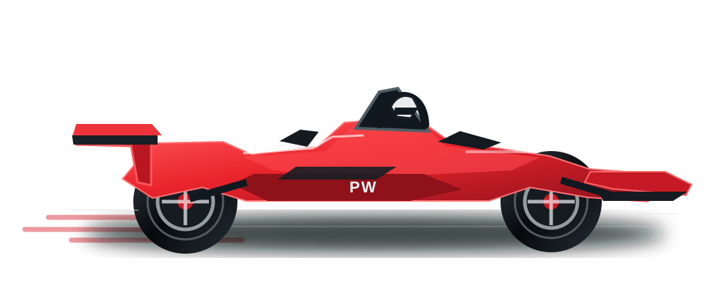

R--
INDEPENDENT FAN PROJECT / 01
THE RACE,
MADE CLEAR.
Real races and drivers. Explore a recorded pit stop, change the decision, and see what the model suggests could have changed.
ORIGINAL SINGLE-SEATER CONCEPT

01 / THE WEEKEND
CALENDAR · LOADINGWhat is next?
R--
PRE-RACE FEATURE
HEURISTICPodium form watch
Real drivers ranked from completed-race results and season points. This is an illustrative pick, not calibrated odds.
For the next Grand Prix
- Loading current form…
Waiting for current standings.
View full season calendar
Calendar: Jolpica F1 API · CC BY-NC-SA 4.0 terms. Loading… Check official dates before travel or viewing.
Loading the calendar…
02 / RACE REWIND
RECORDED DATA + MODELChange a real decision.
Choose a completed Grand Prix and a recorded pit stop. The positions and lap times are real; the alternative is a conditional calculation.
5 LAPS EARLIERRECORDED5 LAPS LATER
Loading recorded race data…
—
Loading…
—
Choose a recorded stop.
Loading race history…
The model holds other drivers' recorded times fixed. It cannot prove a different race result.
Recorded finishing order
02 / STRATEGY LABPit now or stay out?Compare two decisions against a chosen rival when you want more detail.
03 / COMPARISON
CONDITIONAL ESTIMATETwo decisions. One race.
MODEL TAKEAWAY
Loading race data…
Assumes green-flag running
OPTION A
Pit now
Take the stop on the next lap and run on fresh tyres.
ESTIMATED REJOIN GAP—
GAP AFTER HORIZON—
—
OPTION B
Stay out 5 laps
Run longer on current tyres, then stop.
ESTIMATED REJOIN GAP—
GAP AFTER HORIZON—
—
GAP EVOLUTION
Where the time goes
Pit now Stay out
04 / EVIDENCE
What this uses
Model assumptions and limits
The displayed range changes pit loss by ±2.5s and fresh tyre gain by ±0.25s/lap. It is a sensitivity check, not a confidence interval. A safety car, rain or traffic can change the decision entirely.
Recorded positions, laps and pit stops: Jolpica F1 API, CC BY-NC-SA 4.0. Strategy paths are conditional estimates, not recorded outcomes. No Formula 1 affiliation.
05 / ASK PITWALL
Explore the choice
Ask a follow-up about the current scenario.
Choose a driver and rival, then ask about either decision. I use the numbers shown here and explain my assumptions.